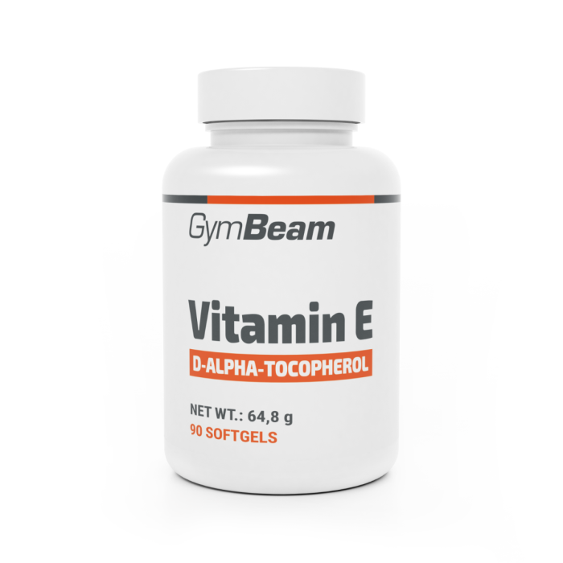

Vitamín E
Vitamín E je silný antioxidant, který chrání buňky před poškozením. Podporuje imunitu a zdraví pokožky. Lidé ho často užívají pro podporu vitality a zpomalení stárnutí buněk. Najdeme ho v ořeších, semínkách a rostlinných olejích. Dodržování doporučené dávky je důležité pro bezpečné užívání.
Nedostatek vitamínu E je vzácný, ale může ovlivnit nervový systém a svalovou funkci. Suplementace může pomoci doplnit jeho hladinu, pokud je příjem z potravy nízký. Nadměrné dávky však mohou zvyšovat riziko krvácení. Výběr kvalitního doplňku je proto důležitý. Správně užívaný vitamín E podporuje zdraví buněk a celkovou pohodu.
